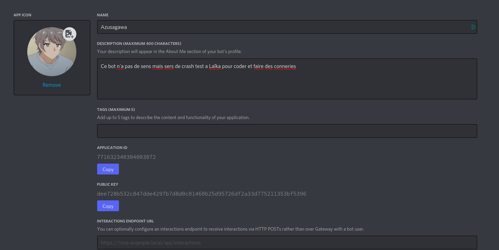

BONJOUR dans cette page je vais vous parler de ma personne et de pourquoi j'aime tout ce qui tourne autour de l'informatique
Premièrement je m'appelle Laika j'ai 15 ans et je m'interesse à l'informatique depuis maintenant bientôt une dizaine d'année
Bien qu'au début je ne comprenais rien bien évidemment :)
J'ai commencé à m'intéresser à l'informatique avec scratch quand j'avais à peu près 5 ans et je ne comprenais rien mais
J'ai toujours aimé voir quelque chose que je crée moi-même se développer au fur et à mesure du temps.
Les projets les plus intéressants je pense que j'ai crée c'était une 'intelligence' artificiel qui est enfaite basée sur de la stupidité artificielle
Sinon j'ai beaucoup aimé travailler en php et en java script qui je trouve sont des langages vraiment très profond et cohérent pour le monde d'aujourd'hui
Au cas où mon développement d'"ia" vous intéresserait voici une image de son contrôle et je dois pouvoir retrouver le code source assez facilement
